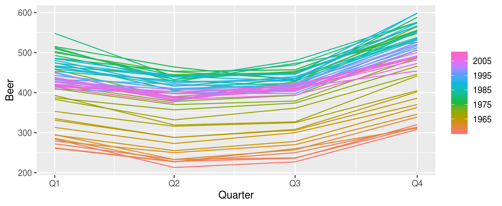
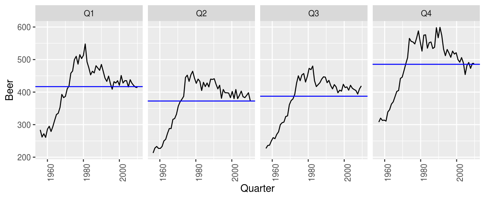
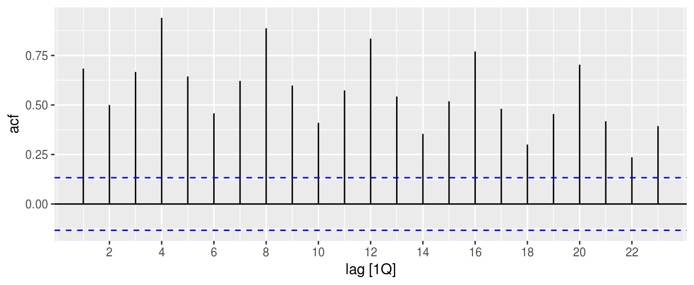
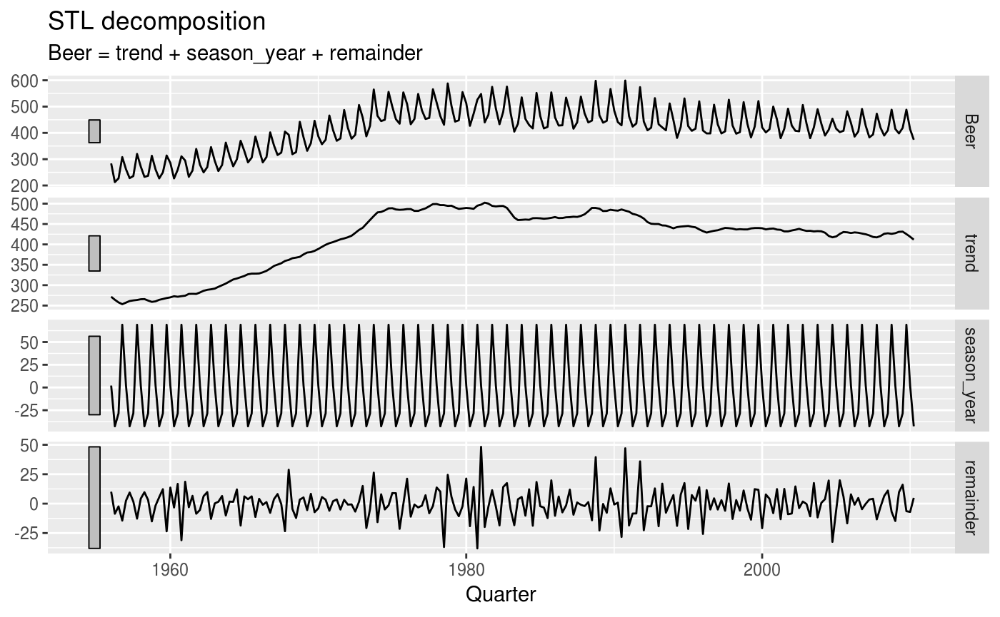
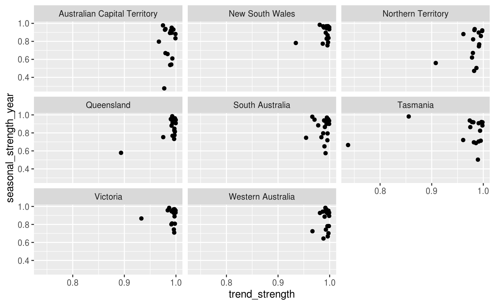
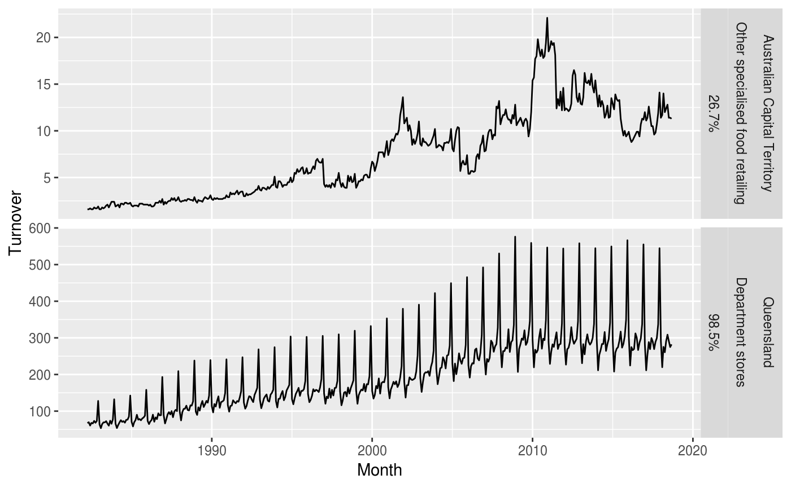

Overview
feasts provides a collection of tools for the analysis of time series data. The package name is an acryonym comprising of its key features: Feature Extraction And Statistics for Time Series.
The package works with tidy temporal data provided by the tsibble package to produce time series features, decompositions, statistical summaries and convenient visualisations. These features are useful in understanding the behaviour of time series data, and closely integrates with the tidy forecasting workflow used in the fable package.
Installation
You can install the development version from GitHub with:
Usage
Graphics
Visualisation is often the first step in understanding the patterns in time series data. The package uses ggplot2 to produce customisable graphics to visualise time series patterns.



aus_production %>% ACF(Beer) %>% autoplot()
#> `unnest()` to a tsibble is deprecated due to the forthcoming tidyr release.
#> Please use `unnest_tsibble()` instead.
Decompositions
A common task in time series analysis is decomposing a time series into some simpler components. The feasts package supports four common time series decomposition methods:
- Classical decomposition
- STL decomposition
- X11 decomposition
- X-13ARIMA-SEATS decomposition
aus_production %>% STL(Beer ~ season(window = Inf))
#> # A dable: 218 x 7 [1Q]
#> # STL Decomposition: Beer = trend + season_year + remainder
#> lst_data Quarter Beer trend season_year remainder seas_adjust
#> <list> <qtr> <dbl> <dbl> <dbl> <dbl> <dbl>
#> 1 <tsibble [218 × 7]> 1956 Q1 284 272. 2.14 10.1 282.
#> 2 <tsibble [218 × 7]> 1956 Q2 213 264. -42.6 -8.56 256.
#> 3 <tsibble [218 × 7]> 1956 Q3 227 258. -28.5 -2.34 255.
#> 4 <tsibble [218 × 7]> 1956 Q4 308 253. 69.0 -14.4 239.
#> 5 <tsibble [218 × 7]> 1957 Q1 262 257. 2.14 2.55 260.
#> 6 <tsibble [218 × 7]> 1957 Q2 228 261. -42.6 9.47 271.
#> 7 <tsibble [218 × 7]> 1957 Q3 236 263. -28.5 1.80 264.
#> 8 <tsibble [218 × 7]> 1957 Q4 320 264. 69.0 -12.7 251.
#> 9 <tsibble [218 × 7]> 1958 Q1 272 266. 2.14 4.32 270.
#> 10 <tsibble [218 × 7]> 1958 Q2 233 266. -42.6 9.72 276.
#> # … with 208 more rows
Feature extraction and statistics
Extract features and statistics across a large collection of time series to identify unusual/extreme time series, or find clusters of similar behaviour.
aus_retail %>%
features(Turnover, stl_features)
#> # A tibble: 152 x 9
#> State Industry trend_strength seasonal_streng… spike linearity curvature seasonal_peak.y…
#> <chr> <chr> <dbl> <dbl> <dbl> <dbl> <dbl> <dbl>
#> 1 Aust… Cafes, … 0.989 0.540 6.17e-5 224. 48.5 0
#> 2 Aust… Cafes, … 0.993 0.609 1.16e-4 336. 76.1 0
#> 3 Aust… Clothin… 0.990 0.914 4.93e-6 129. 16.8 9
#> 4 Aust… Clothin… 0.991 0.947 2.60e-5 192. 18.4 9
#> 5 Aust… Departm… 0.975 0.977 2.85e-5 130. -42.8 9
#> 6 Aust… Electri… 0.991 0.925 3.19e-5 232. -8.24 9
#> 7 Aust… Food re… 0.999 0.874 2.50e-4 1247. 197. 9
#> 8 Aust… Footwea… 0.978 0.929 7.75e-6 63.0 1.60 9
#> 9 Aust… Furnitu… 0.979 0.657 4.87e-5 139. -22.5 9
#> 10 Aust… Hardwar… 0.992 0.892 1.56e-5 170. 44.1 9
#> # … with 142 more rows, and 1 more variable: seasonal_trough.year <dbl>This allows you to visualise the behaviour of many time series (where the plotting methods above would show too much information).
aus_retail %>%
features(Turnover, stl_features) %>%
ggplot(aes(x = trend_strength, y = seasonal_strength.year)) +
geom_point() +
facet_wrap(vars(State))
Most of Australian’s retail industries are highly trended and seasonal for all states.
It’s also easy to extract the most (and least) seasonal time series.
extreme_seasonalities <- aus_retail %>%
features(Turnover, stl_features) %>%
filter(seasonal_strength.year %in% range(seasonal_strength.year))
aus_retail %>%
right_join(extreme_seasonalities, by = c("State", "Industry")) %>%
ggplot(aes(x = Month, y = Turnover)) +
geom_line() +
facet_grid(vars(State, Industry, scales::percent(seasonal_strength.year)),
scales = "free_y")